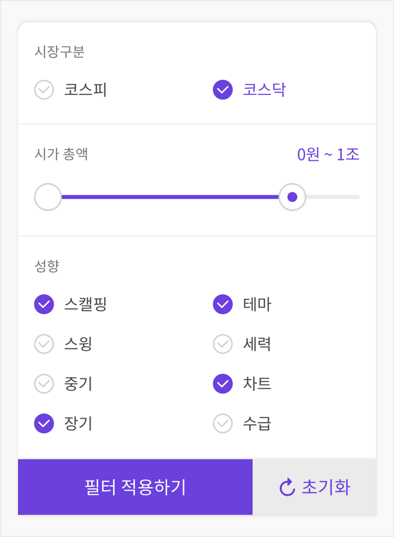

필터 설정하기
1
화면 하단의 필터 버튼을 클릭합니다.
2
원하는 조건을 설정하고 필터 적용하기 버튼을
클릭하면 필터가 적용됩니다.
클릭하면 필터가 적용됩니다.

필터 초기화 하기
1
화면 하단의 필터 버튼을 클릭합니다.
2
필터 초기화 버튼을 클릭하여 설정한 내용을
초기화 한 후, 필터 적용하기를 누르면 완료 됩니다.
초기화 한 후, 필터 적용하기를 누르면 완료 됩니다.
필터 적용 하러 가기